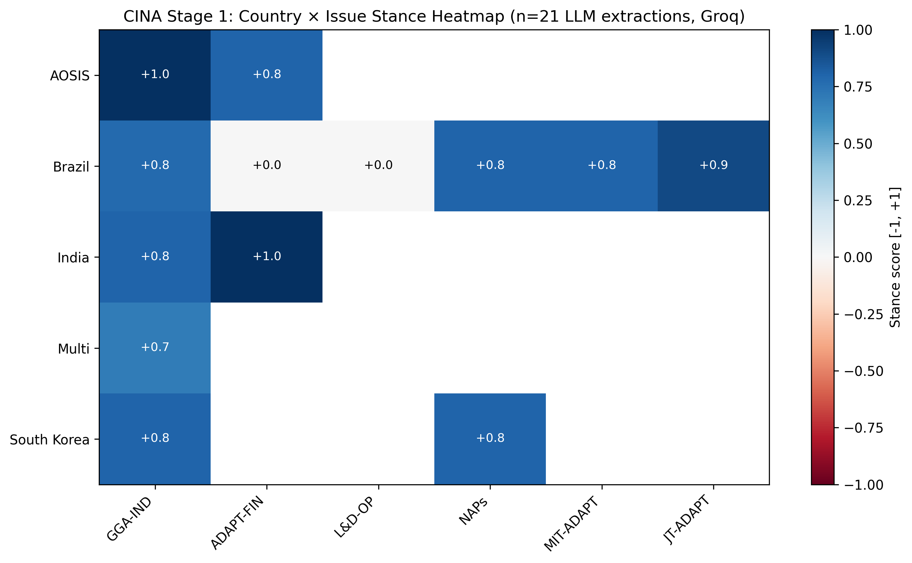
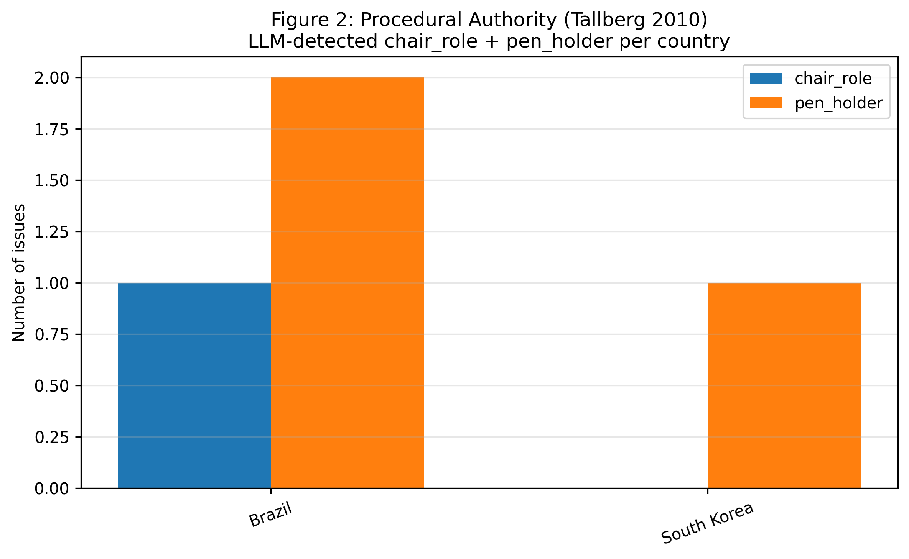
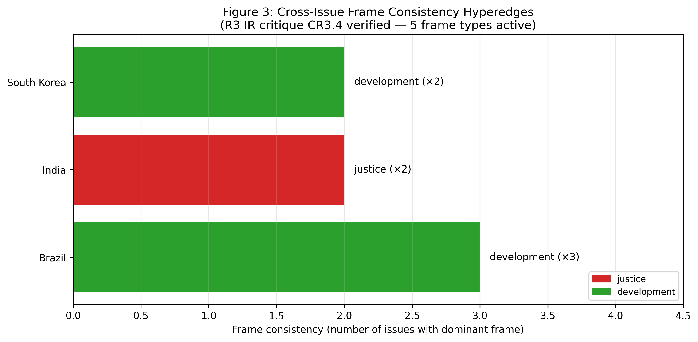
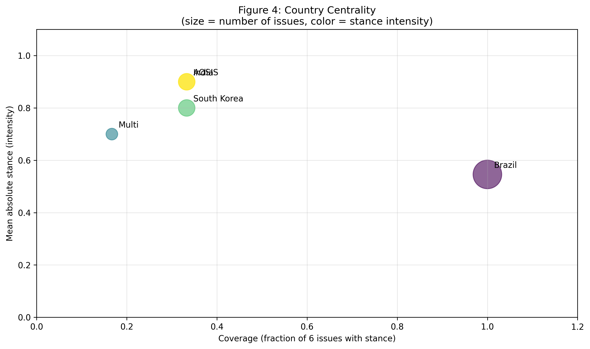
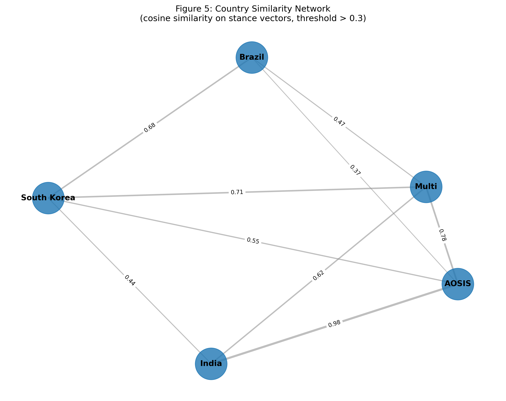
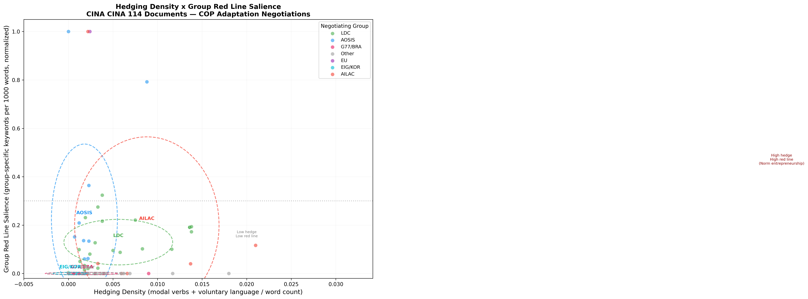

§2 Figures — Stage 2 시각화 (7 PNG · 300 dpi)
모든 figure는 data/processed/figures/ 또는 deliverables/에서 생성 — matplotlib + networkx, reproducible via src/stage2_graph/generate_figures.py.

Figure 1. Country × Issue Stance Heatmap
13 countries × 6 issues stance tensor (Stage 1 산출). 적색=opposing, 청색=supporting. 페이퍼 §3 anchor figure.

Figure 2. Procedural Authority Distribution
Tallberg 2010 framework: chair_role + pen_holder + drafts_text 신호 분포. Brazil COP30 chair authority 정량화.

Figure 3. Frame Consistency by Group
5-frame typology (scientific/justice/sovereignty/security/development) × 그룹별 빈도. AOSIS=justice, Saudi+India=sovereignty.

Figure 4. Centrality Rankings
5 centrality (PageRank·betweenness·eigenvector·degree·closeness) Top-K. Brazil 의장국 + EU 펜홀더 우위.

Figure 5. Leiden Community Network
Leiden 2 communities: C0={Brazil, Multi, AGN, EU} development / C1={AOSIS, India, Korea, LMDC} mixed. Keohane-Victor 'horizontal cleavage' 정량 검증.

Figure 6. Hedging Density × Red Line 2D
AILAC (high hedging + mod RL — tactical), AOSIS (low hedging + high RL — principled), LDC (mod + low — vulnerable). Finnemore-Sikkink norm typology 시각 검증.

Figure 7. Hedging vs Red Line (보강판)
추가 그룹 라벨링 + 95% confidence ellipse 적용.